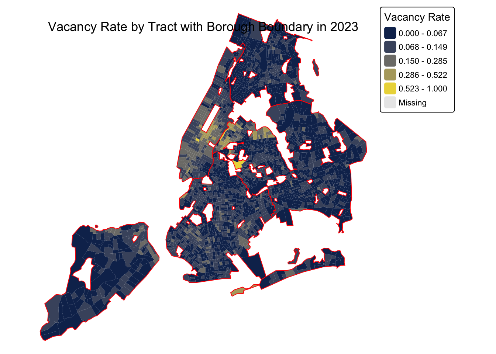
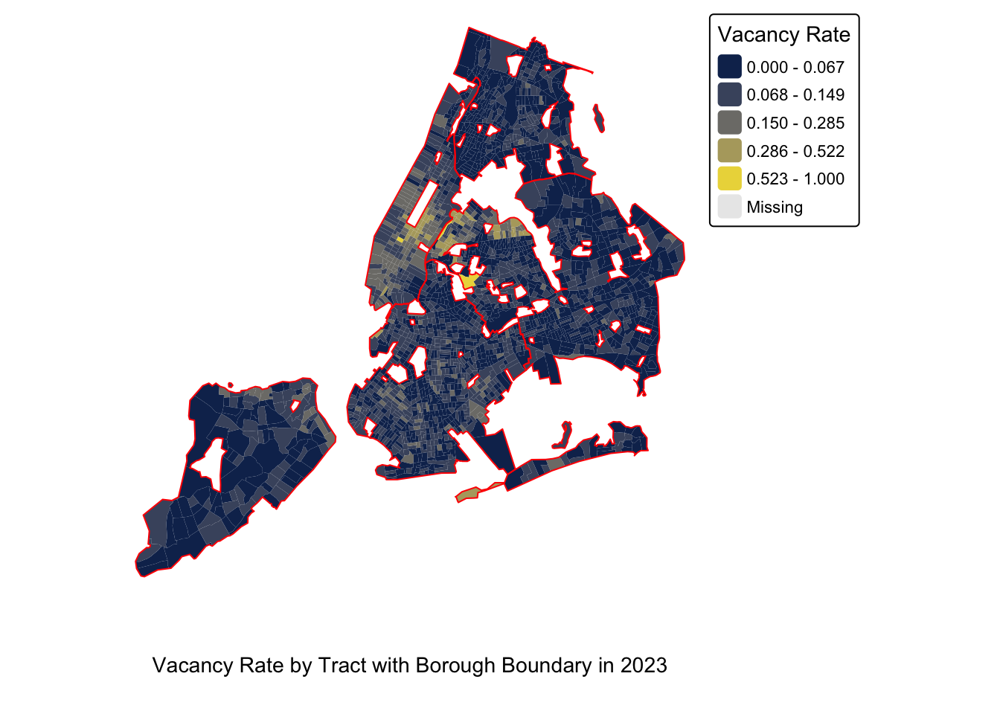
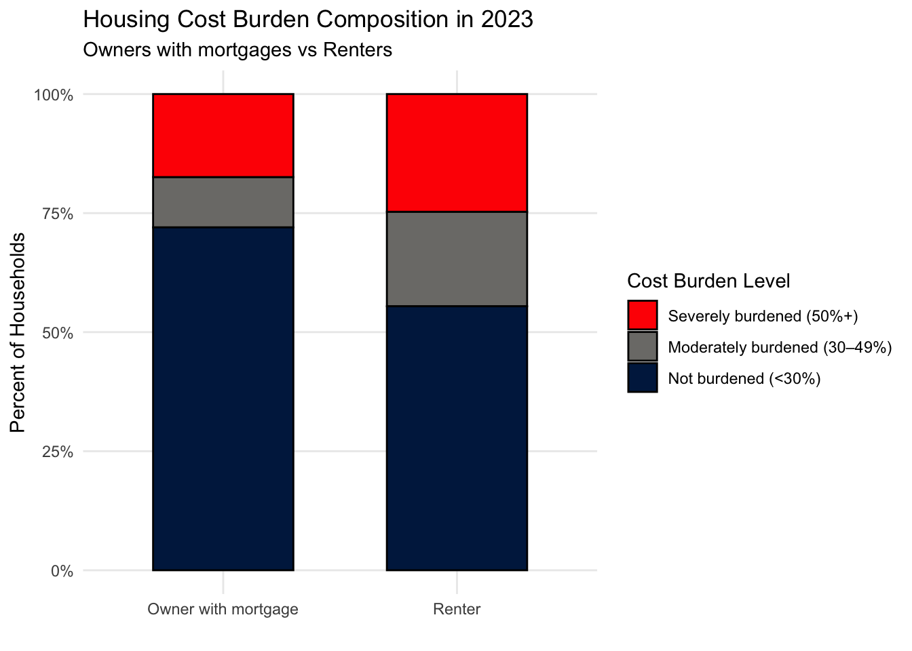
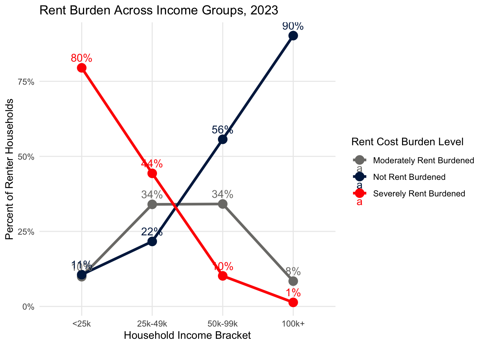
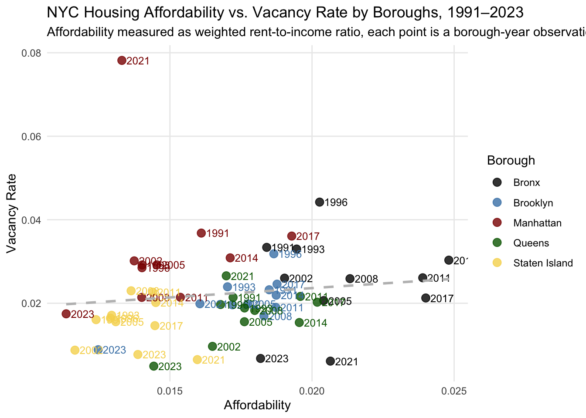

This project looks at how housing vacancy and affordability have changed in New York City over time. Even though people often talk about “empty apartments,” our findings show that NYC’s vacancy rate has stayed low for more than 30 years, and only spiked briefly in 2021. When we map vacancy across neighborhoods, we see that higher vacancy is concentrated in parts of Manhattan, while most other areas remain very tight. To understand why vacant units are not available, we examined the reported reasons. Most units are unavailable because of renovations, seasonal use, or multiple overlapping issues—not because they are intentionally kept off the market. This suggests that the city’s main housing challenge is not unused supply, but rather limited availability caused by structural and practical constraints. We also looked at what kinds of housing units tend to be vacant. Basic building features—like number of rooms, stories, and building size—show some patterns, but they do not strongly explain vacancy on their own. Affordability, however, shows a much clearer story. Rent in NYC has grown much faster than income since the early 1990s, and low-income renters are especially likely to be severely rent-burdened. Even middle-income renters face rising pressure. When we compare affordability with vacancy, we find no strong link: places with expensive housing do not necessarily have higher vacancy. Instead, affordability problems exist even when the market is extremely tight. Overall, the findings suggest that NYC’s housing issues are driven less by “too many vacant apartments” and much more by a long-term mismatch between rent growth and income growth, combined with limited rental supply and structural barriers that keep some units offline. This helps explain why affordability remains one of the city’s biggest challenges.
Code
# All needed librarylibrary(tidyverse)library(janitor)library(tidycensus)library(sf)library(dplyr)library(tmap)library(FactoMineR)library(factoextra)library(ggplot2)library(ggalluvial)library(viridis)library(fredr)library(lubridate)library(scales)library(ggrepel)library(vcd)
Code
# Read data from csv# This two csv files come from the extraction by pdf_extract_occupied.py (occupied_layout.csv & vacant_layout.csv are needed as well)occ_before <-read_csv("/Users/serenacyn03/HousingAffordability/data_raw/occupied_all_years.csv") |>clean_names()vac_before <-read_csv("/Users/serenacyn03/HousingAffordability/data_raw/vacant_all_years.csv") |>clean_names()puf21 <-read_csv("/Users/serenacyn03/HousingAffordability/data_raw/allunits_puf_21.csv") |>clean_names()vac21 <-read_csv("/Users/serenacyn03/HousingAffordability/data_raw/vacant_puf_21.csv") |>clean_names()person21 <-read_csv("/Users/serenacyn03/HousingAffordability/data_raw/person_puf_21.csv") |>clean_names()occ21 <-read_csv("/Users/serenacyn03/HousingAffordability/data_raw/occupied_puf_21.csv") |>clean_names()puf23 <-read_csv("/Users/serenacyn03/HousingAffordability/data_raw/allunits_puf_23.csv") |>clean_names()vac23 <-read_csv("/Users/serenacyn03/HousingAffordability/data_raw/vacant_puf_23.csv") |>clean_names()person23 <-read_csv("/Users/serenacyn03/HousingAffordability/data_raw/person_puf_23.csv") |>clean_names()occ23 <-read_csv("/Users/serenacyn03/HousingAffordability/data_raw/occupied_puf_23.csv") |>clean_names()
This figure shows the long-run vacancy rate trends across New York City’s five boroughs. Overall, vacancy rates remain consistently low throughout the entire period, which suggests that NYC has persistent housing supply pressure for more than three decades. Most boroughs fluctuate within a narrow range of 1% to 4%, indicating a tight housing market rather than a market experiencing oversupply. The Bronx shows a noticeable peak in the mid-1990s, reaching above 4%, followed by a sharp decline in the early 2000s. This pattern may reflect earlier periods of disinvestment and later recovery. Manhattan shows the largest fluctuation in the later years, with a sharp spike in 2021 when vacancy rose to nearly 8%, followed by a rapid return to historically low levels by 2023. This unusual jump is likely related to short-term disruptions such as the COVID-19 pandemic rather than long-term structural changes in housing supply. Queens also experiences a temporary increase in vacancy around 2021, though to a much smaller extent, and quickly returns to very low levels. Staten Island remains the most stable borough throughout the period, with consistently low vacancy and minimal fluctuations. By 2023, vacancy rates across all five boroughs fall below 1%, highlighting an extremely tight post-pandemic housing market.
# Plot1.2: NYC ACS Vacancy Choropleth with Borough Boundary#| fig-width: 12tmap_mode("plot")tm_shape(nyc_tract_vacancy) +tm_fill("vacancy_rate",palette ="cividis",style ="jenks",n =5, title ="Vacancy Rate" ) +tm_shape(nyc_boroughs_union) +tm_borders(col ="red", lwd =1) +tm_layout(title ="Vacancy Rate by Tract with Borough Boundary in 2023",legend.outside =TRUE,frame =FALSE )

This map illustrates the spatial distribution of vacancy rates across New York City at the census tract level in 2023. Most tracts across the city fall within the lowest vacancy range, indicating that the overall housing market remains extremely tight. However, there are clear geographic differences in where the remaining vacancies are concentrated. Manhattan shows the most noticeable cluster of higher-vacancy tracts, particularly around Midtown and parts of the Upper East Side and Lower Manhattan. These localized pockets stand out sharply compared with the rest of the city, suggesting that vacancy in 2023 is not evenly distributed across Manhattan but concentrated in specific neighborhoods. Queens also contains a few isolated tracts with comparatively elevated vacancy, appearing mainly near Long Island City and in some outer areas. In contrast, the Bronx, Brooklyn, and Staten Island remain almost entirely within the lowest vacancy categories, showing limited spatial variation. Overall, the map highlights that even in a year with historically low citywide vacancy, certain neighborhoods—especially in Manhattan—display higher levels of unoccupied units, while most residential areas across NYC maintain very limited vacancy.
Code
# Plot2.1: Vacancy Reason Distribution Bar Chartreason_labels <-c("-2"="Not Applicable (Available/Owner-prev)","-1"="Not Reported","1"="Under Renovation","2"="Seasonal/Occasional Use","3"="Additional Structural/Legal Reasons","4"="Held as Vacant","5"="Multiple Reasons Reported")vac23$reason_label <-factor( vac23$reason_notavail,levels =c(-2, -1, 1, 2, 3, 4, 5),labels = reason_labels)vac23 |>count(reason_label) |>ggplot(aes(x = n, y =reorder(reason_label, n))) +geom_col(fill = viridisLite::cividis(6)[2]) +labs(title ="Distribution of Reasons for Units Being Not Available in 2023",x ="Count",y ="Reason" ) +theme_minimal()

This bar chart shows the distribution of reported reasons why vacant housing units are not available for rent. The largest category is “multiple reasons reported,” indicating that many vacant units face more than one constraint at the same time, such as renovation needs combined with legal or structural issues. This highlights the complexity behind housing vacancy and suggests that many units are kept off the market due to overlapping barriers rather than a single cause. Seasonal or occasional use is the second most common reason, which suggests that a significant portion of vacancies are associated with second homes, temporary occupancy, or infrequent usage. These units are technically vacant but are not intended to be part of the long-term rental supply. Units under renovation also represent a substantial share of unavailable housing, showing that short-term construction and improvement activities temporarily reduce market supply. Structural or legal reasons further limit availability, reflecting the role of regulatory and physical constraints in shaping vacancy. In contrast, relatively few units are reported as being intentionally held vacant. Overall, this distribution suggests that most vacancy in the market is driven by practical factors rather than by holding of housing from renters.
Code
vacall_23 <- vac23 |>inner_join(puf23, by ="control", suffix =c("_vac", "_all"))
This biplot shows the main structural differences among vacant housing units using two principal components. The first dimension (PC1, x-axis) mainly reflects overall building scale and vertical form. On the right side of the x-axis, variables such as log units, year built, number of stories, and unit floor level load positively. This means units on the right side tend to be in larger, taller, and newer buildings, and are located on higher floors. In contrast, on the left side of the x-axis, elevator and condo/co-op load in the opposite direction, which suggests a different building type structure, often related to lower-rise or non–high-density residential forms. The second dimension (PC2, y-axis) is mainly driven by interior unit features, including number of rooms, number of bedrooms, and number of bathrooms. Units with higher values on PC2 tend to have larger interior space and more amenities, while units with lower PC2 values are more compact and have fewer interior features. Overall, this biplot shows that vacant housing units in NYC differ mainly along two structural dimensions: (1) building scale and vertical structure, and (2) interior unit size and amenities. While this PCA helps summarize the structural heterogeneity among vacant units, it does not by itself establish a direct causal relationship between these structural features and vacancy. Instead, it provides visual evidence that vacant units in 2023 vary widely in both building type and interior characteristics.
hh_df <- race_majority |>left_join(age_mean, by ="control") |>left_join(household_type |>select(control, hh_type), by ="control") |>left_join(occ23 |>select(control, rent_amount, hhinc_rec1, fw), by ="control")
Code
income_bins <-function(h) {case_when( h <25000~"<25k", h <50000~"25k-49k", h <100000~"50k-99k", h >=100000~"100k+",TRUE~NA_character_ )}rent_bins <-function(r) {case_when( r <500~"<500", r <1000~"<1k", r <1500~"<1.5k", r <2000~"<2k", r <3000~"<3k",TRUE~"3k+" )}hh_df <- hh_df |>mutate(income_bracket =income_bins(hhinc_rec1),rent_bracket =rent_bins(rent_amount),age_group =case_when( mean_age <35~"18–34", mean_age <55~"35–54", mean_age <65~"55–64",TRUE~"65+" ) )
# Plot4.1: Housing cost burden by owner and renterplot_df$cost_burden <-factor( plot_df$cost_burden,levels =c("Severely burdened (50%+)","Moderately burdened (30–49%)","Not burdened (<30%)" ))ggplot(plot_df, aes(x = tenure, y = pct, fill = cost_burden)) +geom_col(position ="fill", color ="black", width =0.6) +scale_y_continuous(labels =percent_format()) +scale_fill_manual(values =c("Not burdened (<30%)"=cividis(3)[1],"Moderately burdened (30–49%)"=cividis(3)[2],"Severely burdened (50%+)"="red" ) ) +labs(title ="Housing Cost Burden Composition in 2023",subtitle ="Owners with mortgages vs Renters ",x ="",y ="Percent of Households",fill ="Cost Burden Level" ) +theme_minimal() +theme(legend.position ="right",panel.grid.minor =element_blank() )

This stacked bar chart compares housing cost burden between homeowners with mortgages and renters in 2023. A clear difference appears between the two groups. Among homeowners with mortgages, about three-quarters of households fall into the “not burdened” category, meaning they spend less than 30% of their income on housing. Only a relatively small share of mortgage holders are moderately or severely burdened. In contrast, renters experience much higher housing cost pressure. Only about half of renter households are not burdened, while the remaining half are either moderately or severely burdened. Most notably, the share of renters who are severely burdened is substantially higher than that of homeowners with mortgages. Overall, this figure shows that renters face much greater housing affordability challenges than homeowners in 2023. Even without making causal claims, the descriptive pattern clearly indicates that housing cost burdens are unevenly distributed across tenure types, with renters being significantly more vulnerable to high housing expenses.
# Plot4.2: housing burden vs. household income for ownerggplot(plot_df_owner,aes(x = income_bracket, y = pct, group = cost_burden)) +geom_line(aes(color = cost_burden), size =1.3) +geom_point(aes(color = cost_burden), size =4) +geom_text(aes(label =percent(pct, accuracy =1), color = cost_burden),vjust =-0.8, size =4 ) +scale_y_continuous(labels =percent_format()) +scale_color_manual(values =c("Severely burdened (50%+)"="red","Moderately burdened (30–49%)"=cividis(3)[2],"Not burdened (<30%)"=cividis(3)[1] ) ) +labs(title ="Mortgage Burden Across Income Groups, 2023",x ="Household Income Bracket",y ="Percent of Owner Households",color ="Mortgage Cost Burden Level" ) +theme_minimal() +theme(legend.position ="right",panel.grid.minor =element_blank() )
Across income groups, both charts show a very similar overall pattern: as household income increases, the share of households experiencing severe cost burden drops sharply, while the share of households who are not burdened rises. This suggests that income is the primary factor shaping housing affordability for both renters and owners. However, when we compare the two groups more closely, we observe an important difference: at every income level, owners with mortgages face much lower severe cost burden rates than renters. This gap implies that owning a home, even with a mortgage, generally provides more stability and protection against extreme housing cost stress. Homeowners benefit from more predictable payments and may have locked in lower mortgage rates, while renters are exposed to faster rent increases and market volatility. At the same time, moderate burden levels stay relatively stable across income for both groups, suggesting that the main shift with higher income is not a reduction in moderate stress, but rather a movement out of severe stress into the “not burdened” category. Overall, these patterns reinforce a key insight: income strongly improves affordability, but renters remain more financially vulnerable than owners. This highlights how tenure type—renting versus owning—plays a structural role in shaping economic security, even among households with similar incomes.
Code
plot_df2 <- df23 |>filter(!is.na(rent_burden), !is.na(income_bracket)) |>group_by(income_bracket, rent_burden) |># group order swappedsummarise(wt =sum(fw, na.rm =TRUE), .groups ="drop_last") |>group_by(income_bracket) |># HERE is the differencemutate(pct = wt /sum(wt)) |># denominator = total in that income bracketungroup() |>mutate(income_bracket =factor( income_bracket,levels =c("<25k", "25k-49k", "50k-99k", "100k+"),ordered =TRUE ) )plot_df2
# Plot4.3: housing burden vs. household income for renterggplot(plot_df2,aes(x = income_bracket, y = pct, group = rent_burden)) +geom_line(aes(color = rent_burden), size =1.3) +geom_point(aes(color = rent_burden), size =4) +geom_text(aes(label =percent(pct, accuracy =1),color = rent_burden),vjust =-0.8, size =4) +scale_y_continuous(labels =percent_format()) +scale_color_manual(values =c("Severely Rent Burdened"="red","Moderately Rent Burdened"=cividis(3)[2],"Not Rent Burdened"=cividis(3)[1] ) ) +labs(title ="Rent Burden Across Income Groups, 2023",x ="Household Income Bracket",y ="Percent of Renter Households",color ="Rent Cost Burden Level" ) +theme_minimal() +theme(legend.position ="right",panel.grid.minor =element_blank() )

This figure compares the growth of the rent index and the household income index in New York City, with both series normalized to 100 in 1991. From 1991 to around 2008, rent and income increased at almost the same pace, meaning affordability stayed relatively stable. After the 2008 financial crisis, rent growth slowed down noticeably, and between 2008 and 2017 income even grew a bit faster than rent. This period may reflect the broader economic recovery, when wage growth slightly outpaced housing cost increases. However, the pattern changes clearly after 2017. Rent begins to rise more quickly, and the gap becomes especially large in the most recent years. From 2021 to 2023, during the post-pandemic period, rent increases sharply while income grows much more slowly. This creates the largest divergence in the entire time series. Overall, the figure suggests that major economic events—such as the 2008 recession and the COVID-19 pandemic—played an important role in shaping the relationship between rent and income. While rent and income once moved together, recent years show a clear disconnect, with rent growth far outpacing income growth. This widening gap helps explain the higher rent burdens observed across many income groups in 2023.
Code
person21_clean <- person21 |>mutate(total_inc_p =na_if(total_inc_rec_p, -2222222222) # remove non-applicable income )occ21_clean <- occ21 |>mutate(rent_amount =na_if(rent_amount, -2) # remove non-applicable rent )income_household21 <- person21_clean |>group_by(control) |>summarise(hh_income =sum(total_inc_p, na.rm =TRUE),fw =first(pw), # household sampling weight.groups ="drop" )boro_lookup21 <- puf21 |>select(control, boro) |>distinct()df21 <- occ21_clean |>select(control, rent_amount) |>left_join(boro_lookup21, by ="control") |># you said you only need fw, rent, and incomeleft_join(income_household21, by ="control")df21 <- df21 |>mutate(annual_rent = rent_amount *12,income_for_burden =if_else( hh_income <=0|is.na(hh_income),NA_real_, hh_income ),rent_to_income = annual_rent / income_for_burden,rent_burden =case_when(is.na(rent_to_income) ~NA_character_, rent_to_income <0.30~"Not Rent Burdened", rent_to_income <0.50~"Moderately Rent Burdened", rent_to_income >=0.50~"Severely Rent Burdened" ) )df21
# Plot4.4: Rent index vs. income indexdf_city$year_f <-factor(df_city$year)ggplot(df_city, aes(x = year_f, y = value, color = type)) +geom_line(linewidth =1.2, aes(group = type)) +geom_point(size =2) +scale_color_manual(values =c("rent_index"=cividis(3)[1], "inc_index"="red"),labels =c("Rent Index", "Income Index") ) +labs(title ="NYC Rent Index vs. Income Index, 1991-2023",subtitle ="1991 is normalized to index value that equals to 100",x ="Year",y ="Index",color ="" ) +theme_minimal()
# Plot4.4: Housing affordabiltiy vs vacancy scattercividis_pal <-c(# 深蓝（Bronx）"black","steelblue","darkred", "darkgreen", "#F6D65D")ggplot(df_all_boro_final, aes(x = rti, y = vacancy_rate, color = boro)) +# Pointsgeom_point(size =3, alpha =0.8) +# Year labelsgeom_text(aes(label = year),hjust =-0.2, vjust =0.5,size =3.2,show.legend =FALSE ) +# Regression line (optional, for clarity)geom_smooth(method ="lm",se =FALSE,linetype ="dashed",color ="grey" ) +scale_color_manual(values = cividis_pal, name ="Borough") +labs(title ="NYC Housing Affordability vs. Vacancy Rate by Boroughs, 1991–2023",subtitle ="Affordability measured as weighted rent-to-income ratio, each point is a borough-year observation",x ="Affordability",y ="Vacancy Rate",color ="Borough" ) +theme_minimal() +theme(legend.position ="right",panel.grid.minor =element_blank() )

This scatterplot compares borough-level affordability, measured by the weighted rent-to-income ratio, with vacancy rates from 1991 to 2023. Overall, the points show no strong linear relationship between the two variables. Most borough-year observations cluster within a narrow range of affordability (around 0.015–0.020) and vacancy rates (around 1.5%–3.5%). This suggests that New York City typically experiences high rent burden and low vacancy at the same time, rather than a simple tradeoff between the two. Manhattan’s 2021 observation stands out as a clear outlier, with both unusually high vacancy and high rent burden. This spike likely reflects the unique impact of the COVID-19 period rather than a long-term pattern. Outside of this event, the data do not show consistent evidence that higher vacancy corresponds to better affordability or that lower affordability coincides with higher vacancy. Different boroughs occupy somewhat distinct regions of the plot, with Staten Island generally appearing more affordable and Manhattan less affordable, but vacancy levels remain low across boroughs in most years. Overall, the figure highlights that affordability challenges in NYC cannot be explained simply by variations in vacancy rates.